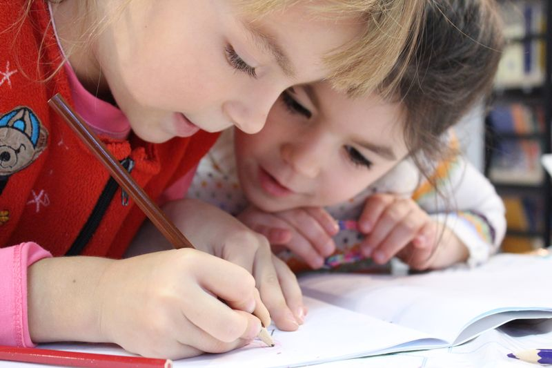
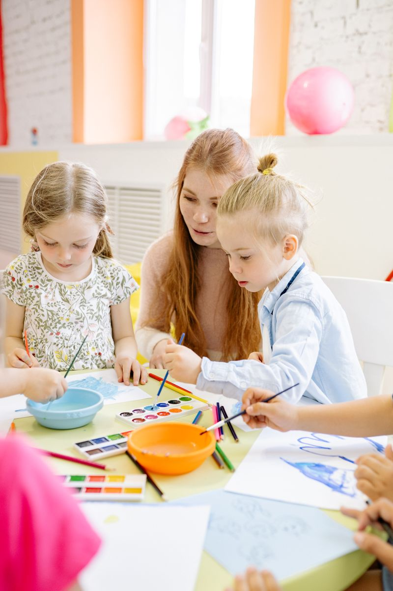
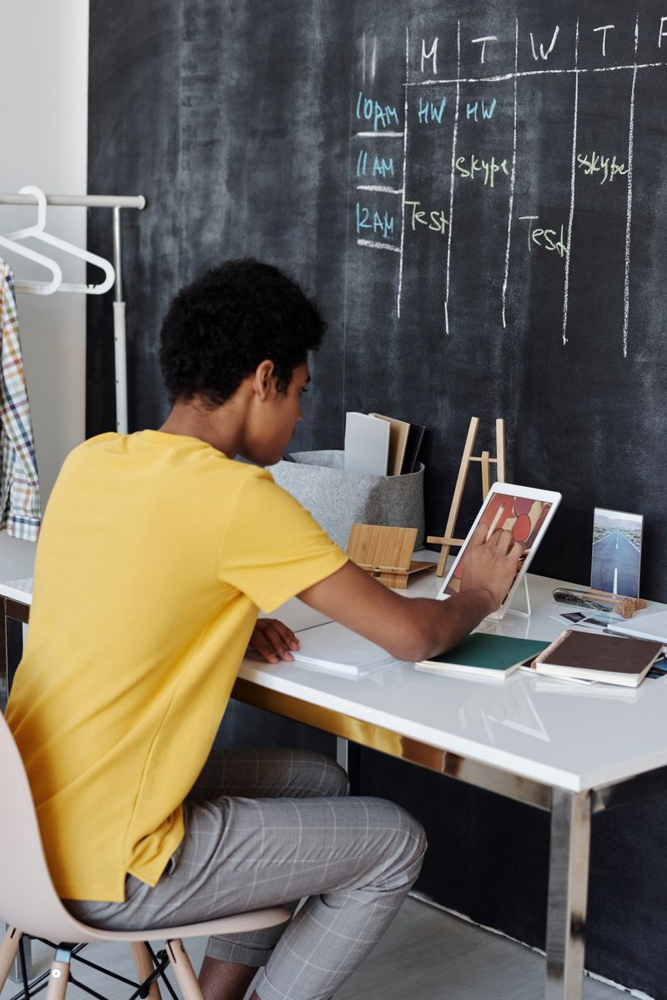

Masa Keemasan
Sang Bintang Dimulai di Sini.
Pada usia 0-6 tahun, anak menyerap bahasa dan nilai kehidupan. Kami menanamkan Budi Pekerti berlandaskan Di Zi Gui dan 10 Nilai Moral, serta trilingual sejak dini.
 Golden Age 2-6 Thn
Golden Age 2-6 Thn
Fase Perkembangan Kognitif
Kegiatan bermain dan belajar menyesuaikan karakteristik perkembangan anak usia dini.

Pengembangan motorik kasar dan pengenalan lingkungan.
Kelompok Bermain (KB)
Pada jenjang KB, murid melatih motorik kasar dan halus serta berinteraksi sosial, didukung metode Learning Corners.
- Melatih berbagi & menunggu giliran.
- Pengenalan kemandirian dasar dan etika
- Penggunaan Bahasa Mandarin secara interaktif.
Persiapan kemampuan kognitif dan sosial menuju sekolah dasar.
Taman Kanak-Kanak (TK)
Pada jenjang TK, murid diperkenalkan pada literasi dan penalaran awal, guna mempersiapkan masa transisi menuju jenjang berikutnya.
- Pra-membaca dan pra-menulis pada pembelajaran trilingual.
- Bermain kooperatif dalam kelompok.
- Eksplorasi logika dan pemecahan masalah sederhana.
Tiga Pilar Metodologi
Pembelajaran bermakna melalui metode bermain terarah.

Penggunaan Trilingual (70% Mandarin)
Penggunaan tiga bahasa secara alami dan interaktif di dalam kelas, didampingi guru native.

Metode Learning Corners
Penataan ruang kelas ala Learning Corners (Prof. Lin Pei Rong), mendukung eksplorasi minat anak lewat berbagai sudut kegiatan.

Pendidikan Budi Pekerti
Pembiasaan 10 Nilai Moral berdasarkan Di Zi Gui, dalam aktivitas sehari-hari.
Kegiatan Belajar Mengajar
Jadwal kegiatan harian murid usia dini.

Fasilitas Belajar Anak
Ruang kelas menggunakan sirkulasi udara alami dan pencahayaan optimal.

Sirkulasi Udara Alami
Dirancang tanpa pendingin ruangan buatan.
Mini Corners
Playground
Prosedur Keamanan Lingkungan Sekolah
Sekolah menerapkan standar keamanan dan kesehatan fasilitas bagi seluruh murid.
-
Unit Kesehatan Sekolah
Bekerja sama dengan perawat medis dari Rumah Sakit Santo Borromeus.
-
Prosedur Penjemputan
Prosedur verifikasi bagi pihak penjemput murid usia dini.
-
Pengawasan di Kelas
Setiap kelas didampingi oleh tiga tenaga pendidik.

Ketentuan Biaya Pendidikan
Uang Pangkal yang dibayarkan untuk jenjang Kelompok Bermain sudah mencakup kelanjutan studi murid hingga lulus jenjang Taman Kanak-Kanak.
Program Keringanan Siblings
Tersedia Program Keringanan Biaya Pendidikan Keluarga (Siblings) bagi pendaftar dalam satu Kartu Keluarga.
Estimasi Awal
Sesuai Ketentuan Biaya
Dapat dilihat pada rincian biaya pendaftaran.
- Mencakup Uang Pangkal kelanjutan jenjang TK-B
- Sudah termasuk SPP bulan pertama
- Belum termasuk biaya seragam dan buku pelajaran
Kunjungan Sekolah
Silakan menjadwalkan kunjungan untuk melihat langsung kegiatan belajar dan fasilitas kami.
Jadwalkan School Visit